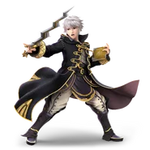

Robin
Win Conditions
- Keep advantage state with juggling for damage. Bad disadvantage from robin allows for huge punishes.
- Primary way to kill Robin is through edgeguarding. Whiff punishing is good too but riskier.
- Avoiding arcfire at all costs. Leads to too much percent or early kills.
- Playing a defensive neutral right out of burst range to avoid getting hit with projectiles or grabs.
Focus
- Disdavantage Options: Look out for airdodges or up air out of hitstun.
- Recovery habits: Will Robin go high or low or throw out a hitbox. Keep these in mind to back air or
dair
successfully.
- Mixing up landings: Her punish game is very strong so be aware of your own landing habits.
- Avoiding projectiles as that's her main form of damage and kill confirms.
Neutral
- Overall you want to play a neutral where you don't approach or hold in.
- Jumping over the laggy projectiles and crouching under the fast ones is good. Stay out of burst
range though.
- Don't overcommit to smash attacks or aerials. She has options to beat both with heavy punishes.
- Avoid spot dodging and mashing attacks. Try to focus more on avoiding pressure and wasting her levin
and books
through movement.
- You can bair through arcfire or dash attack under it.
- Only use bucket if you're out of grab range. Go for arcfire (before it explodes), thunder,
arcthunder.
Disadvantage
Ledge
- Arcfire is almost a guaranteed 2frame at ledge. Try to time it so you grab ledge right after it
despawns.
- Be aware of what kind of punish robin wants. She will look for aerials, downsmash, dash attack, or a
smash
attack. Choose based on previous options or just to mix up.
- During arcifre startup you can roll and up b for a good punish. Grab is good too if spaced right.
- You can go high through arcfire with up b but you won't have a jump afterwards and can get punished
by levin.
Juggling
- When above robin look out for aerials for the most part. Up air is the main one.
- Don't dair out of disadvantage unless it's a guaranteed punish or you're far enough to not get
punished.
- Be careful of airdodging because you can get frame trapped very easily.
- Avoid going to ledge if possible through landing mixups or drifting mixups.
Advantage
Ledge
- Chef works super well versus robin.
- Be careful of projectiles while robin is recovering to get you off ledge. Bucket works perfectly for
this.
- Be ready to catch jumps with nair or up air. Robin has a high jump but airspeed isnt too great.
Offstage
- Look for recovery habits. Her offstage prescence isn't too threatening and you can back air for free
and can go
deep. Be careful not to be under her before she up b's.
- Dair is also really good however her up air can beat it and if you miss it she can get a good punish
with levin
or she'll go back to stage for free. Use it after a frame trap.
Juggling
- Robin is combo food. Don't overextend with nair or up air or you will eat an up air. Just be careful
of
reversals.
- Try to track her drift. It's all she really has in disadvantage along with airdodge.
- Fast fall airdodge is a good option and easy to punish so look out for this one.
Misc
- Average airspeed
- Very big disjoints
- Arcfire is pretty slow and laggy
- Do NOT bucket exploded arcfire.
- Up Air can beat my dair.
Stages
Battlefield
- Great combos, big blastzones.
Small Battlefield
- Decent combos, small ceiling so you die eariler to up smash or uair.
Final Destination
- Decent combos, big blastzones, Robin has even worse disadvantage here.
Town and City
Smashville
- Holding center stage is very strong. Easy juggles and combo extensions. Small though so be careful
about
projectiles.
Pokemon Stadium 2
- Neutral stage overall though you will most likely get camped harder since its so big. Big blast
zones though.
Yoshi's Story
Lylat
Kalos
- Overall it is okay but you lose kill power and give robin more recovery options. You will also get
camped more.